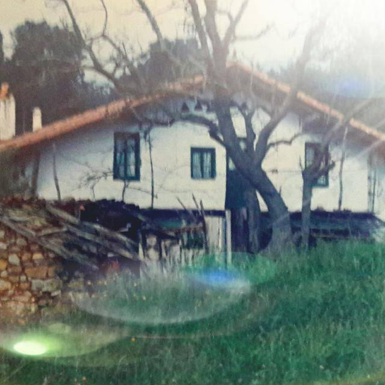

Superficie construida
[294,68 m²]

Venta directa · Sin intermediarios
[Meñaka Bidea 011 Mungia, BIZKAIA]
En cifras
Superficie construida
[294,68 m²]
Terreno / Pertenecidos
[28.734 m²]
Estado
[A reformar]
Año de construcción
[1910]
Suministros
Agua municipal y luz
Vistas
Valle de Larrauri y monte Jata
Desde 1910
Construido en 1910, este caserío tradicional representa una oportunidad única para quienes buscan desconectar del ruido y diseñar desde cero su propio proyecto de vida en plena naturaleza, a un paso de Mungia y perfectamente conectado con Bilbao y la costa de Uribe Kosta.

La vivienda conserva el carácter auténtico de la arquitectura rural vizcaína de principios del siglo XX. Requiere una reforma integral, lo que te brinda la libertad absoluta de proyectar el hogar que siempre has imaginado: mantener la nobleza de su estructura original mientras integras espacios diáfanos, grandes ventanales orientados al paisaje y toda la eficiencia energética del siglo XXI.
A diferencia de otras propiedades aisladas donde llevar los servicios supone un problema técnico y costoso, este caserío cuenta ya con toma de agua municipal y acometida eléctrica, facilitando enormemente el arranque de las obras y garantizando la comodidad desde el primer día.
El acceso se realiza a través de un camino rural propio sin asfaltar que actúa como frontera natural con las prisas del día a día. Al llegar al alto donde se asienta la propiedad, la sensación es de aislamiento total y paz absoluta, rodeado únicamente por el sonido del viento y la naturaleza.
Sus [25.623 m²] de terreno forman un ecosistema propio dividido en tres ambientes:
Casi dos hectáreas de terreno abierto alrededor de la casa, ideales para disfrutar de privacidad total, instalar zonas de recreo, tener animales o desarrollar un proyecto agrícola.
Un rincón mágico de arbolado autóctono que aporta sombra, frescor y un entorno de cuento en cada estación del año.
Un espacio ya establecido para cultivar tus propios alimentos y disfrutar de la autosuficiencia.

Gracias a su ubicación elevada, el caserío domina un paisaje de postal: por un lado, la estampa tranquila y verde del barrio de Larrauri; por otro, la silueta imponente del monte Jata cerrando el horizonte. Es el escenario perfecto tanto para una residencia familiar exclusiva en plena naturaleza como para un proyecto de agroturismo con encanto.
Quiero conocerloGalería
Pulsa sobre cualquier foto para ampliarla.


Ubicación
Barrio de Larrauri, Mungia (Bizkaia). Tranquilidad absoluta a pocos minutos de Bilbao, el aeropuerto y las playas de Uribe Kosta.
Tiempos aproximados sin tráfico. Acceso final por camino rural propio sin asfaltar.
Contacto directo
Hablas directamente con la propiedad, sin agencias ni comisiones. Escríbenos y concertamos una visita cuando te venga bien.